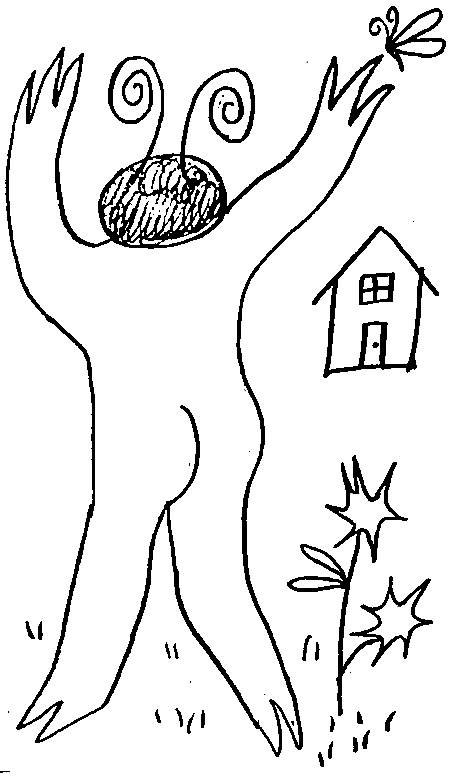
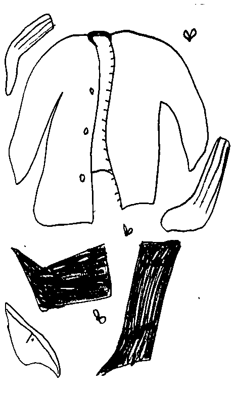

Though the thought of open nudity may be
anxiety-inducing
to some people, to others it can be quite a
liberating
experience.
There’s nothing
shameful
or
immoral
about going naked—
as long as you do it the right way.
If you’re thinking about ditching your clothes
(and your inhibitions),
it will be helpful to know how to go about it without encountering legal trouble or potentially embarrassing situations. For starters, you should learn to feel good about your body, work up slowly to stepping outside in your natural state and only expose yourself in places where you won’t be seen by others.
Get comfortable with your body.
Most people aren’t used to seeing themselves naked.
In order to work up the courage to go uncovered outdoors, you first have to be confident in the way you look and feel. Take some time to get reacquainted with yourself in your most natural state, without judgment or self-consciousness. Learn to love and accept your body. Remember all the wonderful things your body does for you,
like sustaining you as you walk, play, run, make meals, give birth, rescue someone, lift weights, and so on.
Spend more time in the nude. If you’re not used to going without clothes, it may feel strange at first. Take your time and build up to a level of nudity you’re comfortable with.
When looking at yourself naked in the mirror, focus on what is
good,
not the parts you feel
insecure
about. Shift to an attitude of gratitude toward all the amazing things your body does for you instead. Start sleeping naked. One natural way of going naked for longer periods of time is to get undressed before you go to bed. That way, you’ll still be covered up while you learn to let your body breathe.
If you share a room with someone else, make sure they’re okay with you going naked before exploring your new habit.
Go naked around the house. Perform routine tasks like making breakfast, reading the paper or answering your emails in the buff. Before long, you’ll begin to associate nudity with everyday activities and it will be
less intimidating.
And since you’ll be in the privacy of your own home, you can concentrate on relaxing and enjoying the feeling of freedom.
This is only recommended for people who live
alone,
as it’s
inappropriate
to force others to see you without clothes.
Make sure the blinds are closed and the curtains are drawn so that others nearby don’t get an unwanted eyeful.
you should make an effort to learn a little bit about the laws in your area related to public nudity. Even if it’s not illegal to be naked out in the open where you live, it may be considered lewd by those around you. Knowing the risks will keep you from getting yourself into trouble or accidentally offending someone.
Should you decide to practice nudity outside, you should be ready to accept whatever consequences come your way.
Confine yourself to private areas. Don’t venture too far from your home right away. Instead, stick to spots that are out of sight from the neighbors, like a screened-in porch or behind a tall fence or hedge. This will allow you to remain hidden while you take your first steps beyond your living space. Enjoying a nude romp may be difficult if you live in an apartment or a crowded neighborhood that doesn’t allow much privacy.
Wait until night time.
Going out when it’s dark will give you a chance to move further out into the open without fear of being seen.
And, even if you are spotted, it won’t be as obvious what you’re doing.
For most people, this will be a great way to take the plunge and go fully naked outside of their home for the first time. To avoid any awkward situations, it will be safest to go out during the early morning hours when everyone else is asleep. Stay away from streetlights, floodlights, passing cars or anything else that may make you plainly visible. Go naked outside at your leisure. Once you’re totally at ease, you can start soaking in the great outdoors in all your natural glory.
You’ll feel much more in touch with the world around you when you let go of social norms and return to the way man was meant to be.
You generally have a right to do whatever you please in the place you call home, as long as you’re not hurting anyone else.
That means there’s no better place to shed your clothes than your own backyard.
If you have enough well-screened space, you might even be able to do some sunbathing or go for a pleasant stroll.
A wooded grove or field set far back from the road can make a perfect place to strut your stuff.
